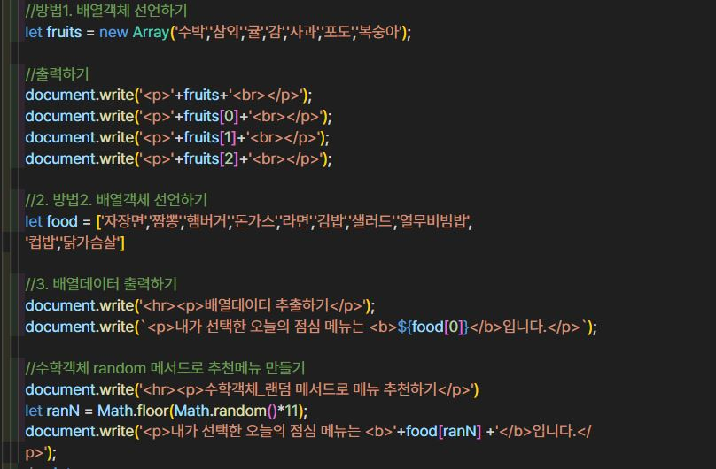
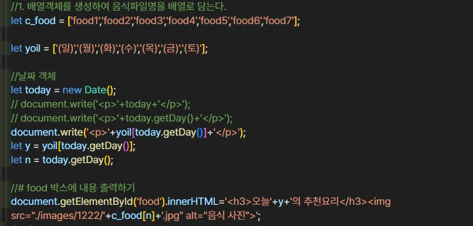

배열객체(array)란?
• 연관된 데이터를 하나처럼 관리하고 싶을 때 사용
• 복수의 데이터를 제어할 수 있는 다양한 함수를 제공함
• 배열의 함수를 이용한 데이터의 편리한 조작이 가능함
• 방법1. let array = new Array(data1, data2, data3, data4.....dataN);
ex1. let fruits = new Array('수박','참외','귤','감','사과','포도','복숭아'...)
• 방법2. elt array = [data1, data2, data3, data4.....dataN]
ex2. let fruits = ['수박','참외','귤','감','사과','포도','복숭아'...]
• 배열객체의 데이터를 호출하고자 할 때는 인덱스 번호를 사용한다 (번호는 0부터 시작)
• 실습예제. 중화요리 이미지를 사용하여 요일별 추천메뉴 만들기
• 날짜 객체를 사용하여 현재 요일 번호 구해서 배열번호에 맞는 이미지 파일명을 찾아 img태그에 대입해 음식사진이 요일별로 출력되도록 하기
• 날짜 객체 사용하기
